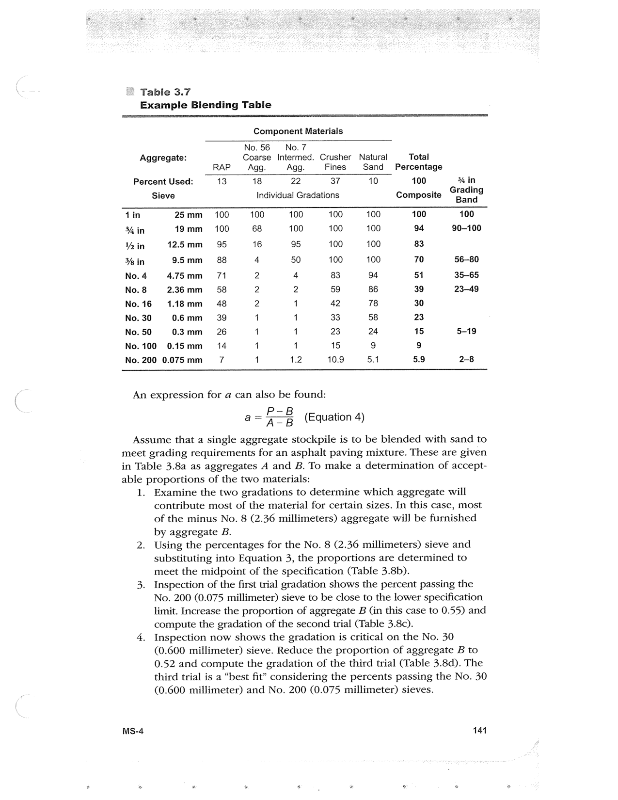

PDF page 175 · book page sequence 141


Searchable transcription
Unproofread OCR · 364 detected words; mean OCR confidence 92.5. Check technical values, symbols and table columns against the scan.
Table 3.7
Example Blending Table
Component Materials
No.56 No.7 Aggregate: Coarse Intermed. Crusher Natural Total RAP Agg. Agg. Fines Sand Percentage Percent Used: 13 18 22 37 10 100 % in Sieve Individual Gradations Composite Grading
din 25mm 100 100 100 100 100 100 100 ¥% in 19mm 100 68 100 100 100 94 90-100 \Y% in 12.5mm 95 16 95 100 100 83 3 in 95mm 88 4 50 100 100 70 56-80 No. 4 475mm 71 2 4 83 94 51 35-65 No. 8 2.36mm 58 2 2 59 86 39 23-49 No.16 1.148mm 48 2 1 42 78 30 No. 30 0.6mm = 39 1 1 33 58 23 No. 50 03mm 26 4 1 23 24 15 5-19 No.100 0.145mm 14 1 1 15 9 9 No. 200 0.075 mm 7 1 1.2 10.9 5.1 5.9 2-8
An expression for a can also be found:
a= f3 (Equation 4)
Assume that a single aggregate stockpile is to be blended with sand to meet grading requirements for an asphalt paving mixture. These are given
in Tab able p 1.
MS-4
le 3.8a as aggregates A and B. To make a determination of accept- roportions of the two materials:
Examine the two gradations to determine which aggregate will contribute most of the material for certain sizes. In this case, most of the minus No. 8 (2.36 millimeters) aggregate will be furnished by aggregate B.
Using the percentages for the No. 8 (2.36 millimeters) sieve and substituting into Equation 3, the proportions are determined to meet the midpoint of the specification (Table 3.8b).
Inspection of the first trial gradation shows the percent passing the No. 200 (0.075 millimeter) sieve to be close to the lower specification limit. Increase the proportion of aggregate B (in this case to 0.55) and compute the gradation of the second trial (Table 3.8c).
Inspection now shows the gradation is critical on the No. 30 (0.600 millimeter) sieve. Reduce the proportion of aggregate B to 0.52 and compute the gradation of the third trial (Table 3.8d). The third trial is a “best fit” considering the percents passing the No. 30 (0.600 millimeter) and No. 200 (0.075 millimeter) sieves.
141